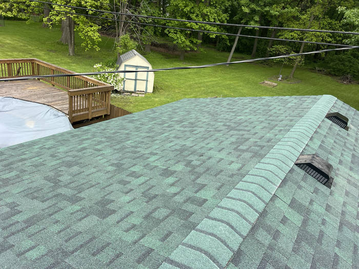

Roof Replacement & New Roof Construction in Lincoln Park, Michigan
Lincoln Park homes deal with heavy rain, freeze/thaw cycles, and wind that can expose weak roofing details fast. Whether you need a full roof replacement or new roof construction, Lincoln Park Roofing builds complete roofing systems—decking inspection, underlayment, ice & water shield, flashing, and ventilation—so your roof performs for the long haul. Every install meets the Official 2026 Michigan Residential Building Code standards.
Local to Lincoln Park
Fast scheduling and real accountability.
20+ Years Experience
Proven installs across Metro Detroit.
Competitive Pricing
We keep costs down and explain options clearly.
What’s Included With Our Roof Replacement / New Roof Construction
- Full tear-off (when needed) + thorough cleanup
- Decking inspection + replacement of damaged wood
- Ice & water shield in key leak-prone areas
- Synthetic underlayment + proper drip edge
- Flashing installed the right way (chimneys, walls, valleys)
- Ventilation to reduce heat + moisture buildup

Real project photo. Swap this image per page if you want a specific service/city example.
New Roof Construction Near Me in Lincoln Park, MI
Searching for new roof construction near me in Lincoln Park or Downriver Michigan? We're the local roofing crew homeowners trust for complete tear-offs and new installations. From neighborhoods near Council Point Park to homes along Fort Street and Southfield Road, we've replaced roofs across every corner of Lincoln Park and surrounding Wayne County communities. Call (734) 224-5615 for a free estimate from a roofer who's actually nearby.
A Simple Process (No Surprises)
1) Free Estimate
We measure, inspect, and talk through material choices so the quote matches the roof you actually need.
2) Prep & Protection
We protect landscaping, set up cleanup zones, and keep your property safe.
3) Install & Ventilation
Underlayment, flashing, ridge/roof ventilation, and shingles installed to spec.
4) Final Walkthrough
We review the work with you and answer questions so you feel confident in the result.
"Our roof was over 25 years old and leaking in multiple spots. We live near Council Point Park off Southfield Road and got quotes from three companies. Lincoln Park Roofing was the most thorough — they showed us the decking damage, explained every step, and had the new roof done in a day and a half. Clean crew, fair price, and the roof looks great. Already recommended them to our neighbors on Dix."
— Robert & Lisa K., Lincoln Park, MI
Pro Tip: Storm Damage May Be Covered
If your roof was damaged by wind, hail, or fallen debris, your homeowner's insurance may cover a full replacement. We document all damage and can walk you through the storm damage claims process step by step.
Lincoln Park Neighborhoods We Serve
We've replaced roofs in every corner of Lincoln Park — from homes near the Lincoln Park Historical Museum on Southfield Road to the residential streets along Fort Street, Dix Avenue, and Outer Drive. We regularly work around Council Point Park, the Pagel neighborhood, and the Champaign and Gregory areas between Goddard Road and Southfield Road.
Get a quote from a real local roofer
Call today and we’ll schedule your free estimate in Lincoln Park.